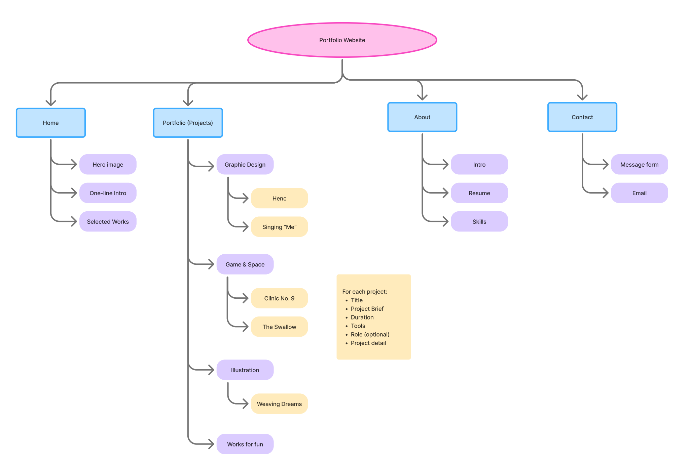
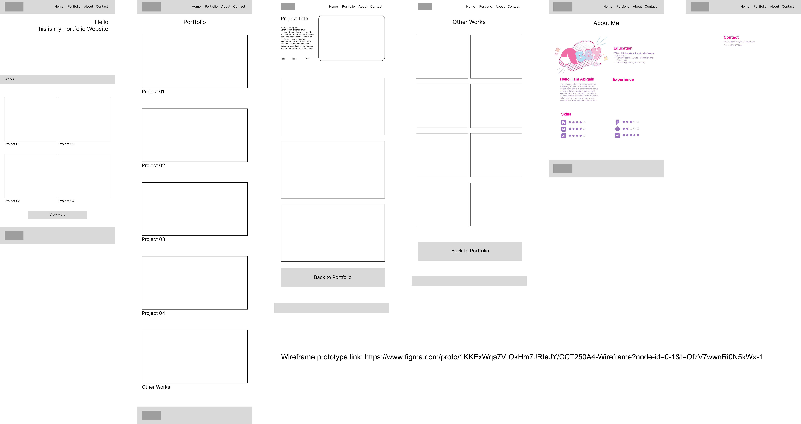

final prototype
planning
I first brainstormed all the works I had and their categories to get started with the project. After deciding the works that I am going to use, I sketched out a sitemap that plans out the pages I am going to include.
With the sitemap as a reference, I proceed by planning out the content of each page, and how these content can be arranged on one webpage. I sketched out a low-fidelity wireframe to visualize my ideas.
design system


logo
I used “Abby”, my nickname, for the design of the logo. I chose a cartoon typeface and incorporated a bright, saturated colour palette to create movement in the logo and give a lighthearted atmosphere.
typography
Color palette
The primary colours of this website are the two shades of pink. Blue and purple are used for highlights or secondary actions. The last colour is used for the background. It has a pink tone therefore works better with the primary colours than pure white. Together the colour palette gives out a cute and delightful vibe to the website.
user testing
User testing helped me in refining my design system of the portfolio website. Feedback from five participants provided valuable insights into the clarity, usability, and functionality of the site. From the user testing results, I identified some common problems that occurred in my wireframe:
1. The function of the current contact page is ambiguous, and there is not much detail that can be included in the page.
2. The lack of categorization of the project page makes it hard for the user to figure out which projects they should investigate in completing their task.
3. Some details can be added to the design system to avoid confusion as well as excessive operation (clicks) to the website.
Changes Made Based on User Feedback
Logo Home Link: I updated the logo, so it now functions as a clickable link back to the home page.
Return Button on Project Page: to support better flow, I added return buttons at both the top and bottom of the project page for easier navigation back to the homepage or main project section.
Contact form: I added a contact form to the contact page to encourage the user to reach out.
Homepage Self-Introduction: A one-line self-introduction has been added to the homepage to help visitors understand who I am at a glance.
Filter System: I categorized my projects in four areas: graphic design, game & space, illustrations, and other works.
Image Zoom on “Other Works”: I implemented a pop-up window for each piece in “Other Works”, so users can view each artwork in greater detail.
Future Development
From this project, I found out that currently I do not have many finalized projects that can be presented on the website. Thus, in future, I will try to create more projects that build up and extend my creative skills. Moreover, I plan to continue refining my existing works, documenting my process more thoroughly, and exploring new mediums and styles to diversify my portfolio.